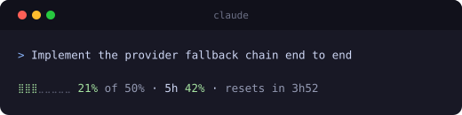

What it does
The real numbers
Your 5-hour and weekly usage exactly as your agent publishes it. Never an invented “% remaining”.
A share you set
Move one project's target and the others move to fit, so the window always adds up. Priority decides who gets what is handed back.
The agent works to it
Each session is told the budget it is inside, and asked to narrow scope and finish as that budget runs down.
Capacity comes back
A project with nothing running lends its share out and reclaims it on your return. Mark one done and the rest have it at once.
Nothing is dropped silently
Work a session set aside to stay in budget is written down, and handed back the next time you open that project.
In your status line

Works with
Claude Codesupported
Hooks and a status line, reading the 5-hour and weekly windows Claude Code publishes.
Codexsoon
Codex publishes its own rate limits, so visibility is close. A share it can act on needs somewhere to inject the advice.
Would you like support for another agent? Open an issue
Where the numbers come from
| Published | 5h and 7d usage, straight from the status line Claude Code publishes it to. We do not estimate it and we do not adjust it. |
| Measured | Tokens per project, counted from the transcripts already on your disk. Nothing is sampled and nothing is sent anywhere. |
| Inferred | The split between projects. One total is published, so dividing it by measured share is ours, and we label it as ours. |
Install
npx savemytokens |
Opens the control centre and offers to install on first run. |
npx savemytokens install |
Four hooks and a status line in settings.json, backed up first. Without
them nothing is live.
|
npx savemytokens uninstall |
Removes every entry it added and restores a status line it wrapped. |
npx savemytokens status |
One plain-text snapshot, or --json for a script. |
What it will not do
- It steers by talking to the agent. A share is delivered as a message at the start of a turn, telling the session the budget it is working within and asking it to narrow scope as that budget runs down. It is a hard limit only if the agent honours it.
- It does not predict a lockout. A percentage and a reset time; anything past those two facts would be a guess.